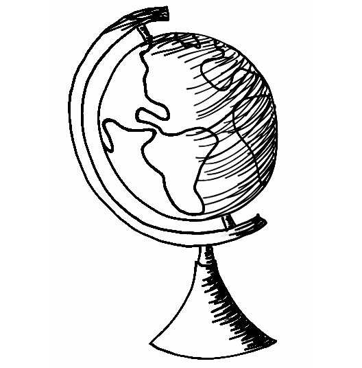
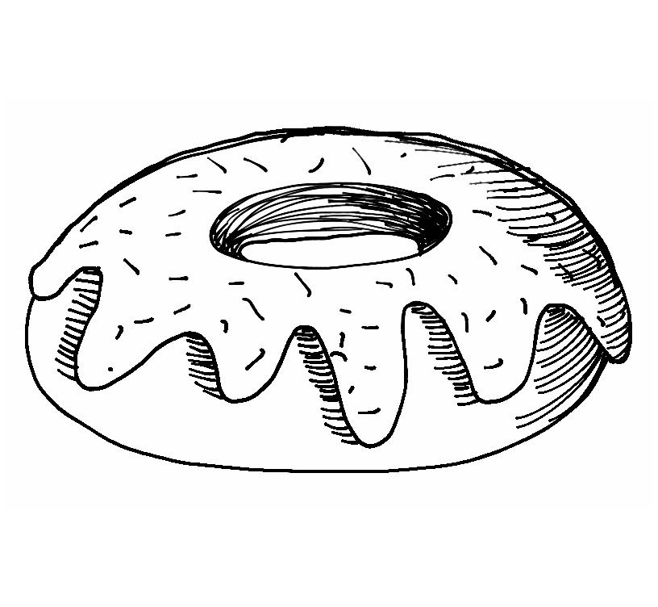
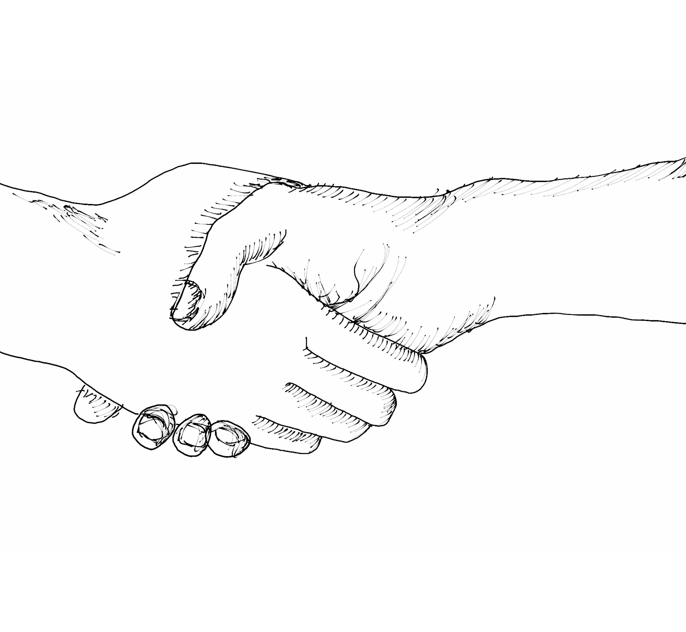

THE THOUGHTS
Let's Start at the Very Beginning
A Very Good Place to Start, June 3, 2018


So Why? Ok so let’s start off with some totally random but totally necessary thoughts, huh? Mmk. So there are many things that I regret, but Peru is not one of them at all. I truly have no idea why I did it, why I went to a foreign country pretty much all by myself to work in a hospital with the original goal of assisting in labor and deliveries. The whole plan was actually decided one month before I left, primarily because all of my original summer plans fell through #boo. However, hindsight is a beautiful thing. Because with hindsight, I can say with 100% confidence that those plans were supposed to fall through for a reason, and Peru happened for a reason. My mom and really the entirety of people I knew were pretty shocked when I told them that I wanted to volunteer somewhere in the world that was not America. It shocked me as well, but even though I was shocked, I was never scared, not once, not even taking off from the Atlanta airport. And ok ok, I did have my rational reasons for wanting to go; it wasn’t totally on a limb that I said, “hey, you know what sounds fun? Peru for two months, of course! A no brainer!” Allow me to list out my reasoning:
1. I wanted to do something completely and totally on my own. Sure, college was a major step, but I was surrounded by tons of people just like me and had everyone right next to me always holding my hand. Stop holding my hand, people!!!!
2. No joke, I wanted to be like Walter Mitty (if you haven’t watched the movie or read the short story, it is the equivalent of not seeing Harry Potter or Titanic in my opinion, but then again, I haven’t seen Star Wars, so how credible am I?). Like, that was a BIG factor. I am not a naturally spontaneous nor adventurous person, so I wanted to be just for once the complete opposite to see what it feels like. Sue me.
3. I wanted to improve my Spanish skills a bunch, and I knew to do that, I would have to get out of the classroom. From all my Spanish experience of who knows how many years, speaking the language has never been my strong suit. So how do we solve this problem? Oh yes, by going somewhere where Spanish is all you speak!
4. I wanted to explore medicine more, and more specifically obstetrics. I’ve been interested in medicine since 10th grade I would say, and only recently has obstetrics in particular been on my radar. I’ll have a whole post about obstetrics and all that jazz (and a little later why not obstetrics…a little sneak peak ooo la la) in a bit.
5. Above all, I wanted to do something for ME, which sounds like the epitome of selfish, but hear me out. Being premed and being a Chemistry major means lots of rules and lots of do’s and don’t’s. Most of the time, it just seems like a checklist where you have to have a little research, a dash of shadowing, a sprinkle of volunteering, and a boatload of studying to get into med school, and up until this trip, I was just going through the motions: take science classes, do sciency things, basically plan out your life for the next four years. And then the research I was planning on doing over the summer didn’t work out, and there goes my four-year schedule. So, I decided to do something that I and only I wanted to do not for credit and not for praise and not for money but for some good plain self-satisfaction.
6. I wanted to see Machu Picchu. Sorry. When you have the option between Guatemala and Peru, you choose Peru. Well, I choose Peru. I’m sure Guatemala is a lovely place, but I don’t know, I guess I kind of wanted to go adventuring every weekend as well. This reason was more of an extra feature than a deal breaker, but like what a rad extra feature am I right?!?!?
Random Take-Aways
The Stuff I've Learned. Numbered.

• Disclaimer: it’s winter there in the summer! Therefore, it is cold! And most houses don’t have heat!
• Coins are the new credit card, and soles are your best friends. The exchange rate from dollars to soles is about 3, so what does this mean? Stuff is CHEAP! It really does mess with your brain, though, when you think you are splurging on a sweater that costs 30 soles, but you are actually spending about 10 dollars. Not going to lie.
• Cusco is a pretty safe place and is more developed in the center than I was expecting. I am not saying that you should walk around alone at night, but I'm just saying that I felt comfortable with riding the bus and walking to the hospital by myself.
• There are stray dogs EVERYWHERE…and we "adopted" probably about a third of them. @cat @harvey @ @doug @tesla we love you.
• The tourist: local ratio in the city center is off the charts. Where do you find them you ask? Well, where is the nearest Starbucks? They cluster around that place like moths to a flame...except the flame is coffee, and coffee is not a punishment. However, I am one of those guilty moths. Oops.
• Altitude + bad water = lots of pills. We are talking a pill for your pre-stomach troubles, a pill for your in-the-moment stomach troubles, a pill for your post-stomach troubles, a pill for altitude sickness, an a pill for any other possible sickness that could arise.
• Every fruit America can make, Peru can make bigger. Please consult the food section for more info.
• Parades are regular and almost daily occurences during the summer months (June and July). One of the many aspect about Cusco that I really admire is their celebration of Incan culture that penetrates every part of their lives, including school activites, market products, architecture, and much more.
• Jenga: what that triangle peg board game is to Cracker Barrel, Jenga is to the majority of the restaurants in Cusco.
• Water is dangerous. Seriously, tap water in the U.S. is a luxury that I did not even notice. It is so hard not to drink tap water, wow! If you have been in a place where you can't drink water from the faucet, you know the pain! However, there is this fancy-dancy water bottle that you can buy that has a filter that will quite literally let you drink water from a river. It is the best. I am pleased with that purchase.
• The city bus (a.k.a. the source of my PTSD). It's busy. It's never not crowded. It's stressful...but it's pretty fun.
• The artisanal markets are the bomb: so much work is put into every single detail because almost all products are handmade by the person selling them, and the quality is amazing. They are the only shops where cotton is the minority, and alpaca is king.
• History, history, history: cathedrals, cathedrals, cathedrals are at every corner at least in the center, and the stories behind them are pretty amazing. The hot ticket that I would not miss seeing, however is the Cusco Cathedral that is a hard one to ignore in the Plaza de Armas. I know, the name is a tricky one to remember; it is really out there, but I believe in you.
Some text about this blog entry. Fashion fashion and mauris neque quam, fermentum ut nisl vitae, convallis maximus nisl. Sed mattis nunc id lorem euismod placerat. Vivamus porttitor magna enim, ac accumsan tortor cursus at. Phasellus sed ultricies mi non congue ullam corper. Praesent tincidunt sedtellus ut rutrum. Sed vitae justo condimentum, porta lectus vitae, ultricies congue gravida diam non fringilla.
TITLE HEADING
Title description, April 7, 2016

Dont miss! The runway in New York City this weekend is gonna be legendary!
Some text about this blog entry. Fashion fashion and mauris neque quam, fermentum ut nisl vitae, convallis maximus nisl. Sed mattis nunc id lorem euismod placerat. Vivamus porttitor magna enim, ac accumsan tortor cursus at. Phasellus sed ultricies mi non congue ullam corper. Praesent tincidunt sedtellus ut rutrum. Sed vitae justo condimentum, porta lectus vitae, ultricies congue gravida diam non fringilla.
The Stuff Doer
Hi. Hello. Greetings. Many thanks for stopping by. Paige is my name, and procrastinating is my game. You see, this whole website is supposed to be a place to share all these pictures I took and stuff I worte in Peru, yes, the Peru that I went to this past summer that I am just now mentioning in December. But hey! I have never been more true to the motto better late than never than right now, and I promised myself and lots of other people that I would finish this, so here it is in all its tardy glory. If you find some bugs or glitches in it, my apologies, but it's because the website was made with 100% html and css, courtesy of computer science (a.k.a. the love of my life!!!!! #lolno) Anywho, I hope you enjoy what I've got!
Categories
-

Some Places
Geography is Cool -

Some Food
The Love of My Life -
 Some People
Some People
Lots of Keepers -

Some Work
Volunteering and Such -
Some Other Thoughts
Similar to the Mystery Flavor Dum-Dum